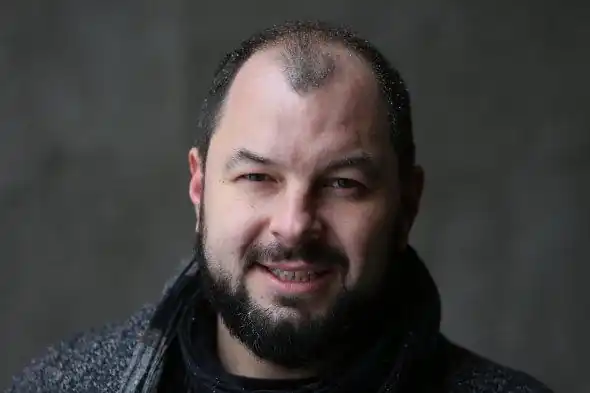

Дмитро Михайлович Лазуткін народився 18 листопада 1978 року в м. Київ. Український телеведучий, спортивний коментатор, поет.
Закінчив Національний технічний університет України, працював телеведучим, кореспондентом та спортивним коментатором на українських телеканалах ("Інтер" та "Перший Національний"), інженером-металургом, юристом, тренером з карате.
За вірші українською мовою був удостоєний премії ім. Б.-І.Антонича (2000), премії видавництва "Смолоскип" (2002), премії "Благовіст". Лауреат конкурсу "Гранослов" (2002). Автор книг українських віршів: "Дахи" ("Дахи"; К., 2003), "Солодощі для плазунів" ("Солоди для плазунів"; К., 2005), "Набиті травою священні корови" ("Набиті травою священні корови") ;К., 2006), "Бензин" (К., 2008), "добрі пісні про поганих дівчат" ("добрі пісні про поганих дівчаток"); К-Під, 2012. Чемпіон України з літературного слему. Вірші російською мовою публікувалися в альманасі "Вавілон", журналах "©оюз Письменників", "Континент", "Волга", "Повітря", збірнику "Легко бути щирим" та ін. Перша книга російських поезій "Паприка мрій", видана в 2006 року з передмовою Сергія Жадана, увійшла до шорт-листа Російської премії. Лауреат ІІІ ступеня міжнародної премії "Співдружність дебютів" у 2008 році. Коментував Олімпійські ігри в Пекіні (церемонії відкриття та закриття, бокс, дзюдо), Ванкувері (церемонії відкриття та закриття, керлінг, гірськолижний спорт), Лондоні (церемонія відкриття, бокс, дзюдо, таеквондо) на Першому Національному, вів програми "У світі ", "Про регбі", "Чоловічий клуб", "Футбольна самба" (разом з Фоззі). Коментує на телеканалі "Інтер" бої Володимира та Віталія Кличка, Василя Ломаченка, Флойда Мейвезера та ін. У 2012 році увійшов у шорт-лист премії "Телетріумф". Переможець Кубка Європи з елітних боїв, Бронзовий призер Кубка світу з кікбоксингу, Чемпіон України з контактного карате та козацького бою. З 2022 року служить у ЗСУ.